News & publications
The HEARTio story so far, newest first, followed by the papers and patents behind it. Jump to publications.
Milestones
-
2024
Forbes 30 Under 30, Healthcare
Recognized alongside my cofounders Utkars Jain and Michael Leasure on the Forbes 30 Under 30 Healthcare list.
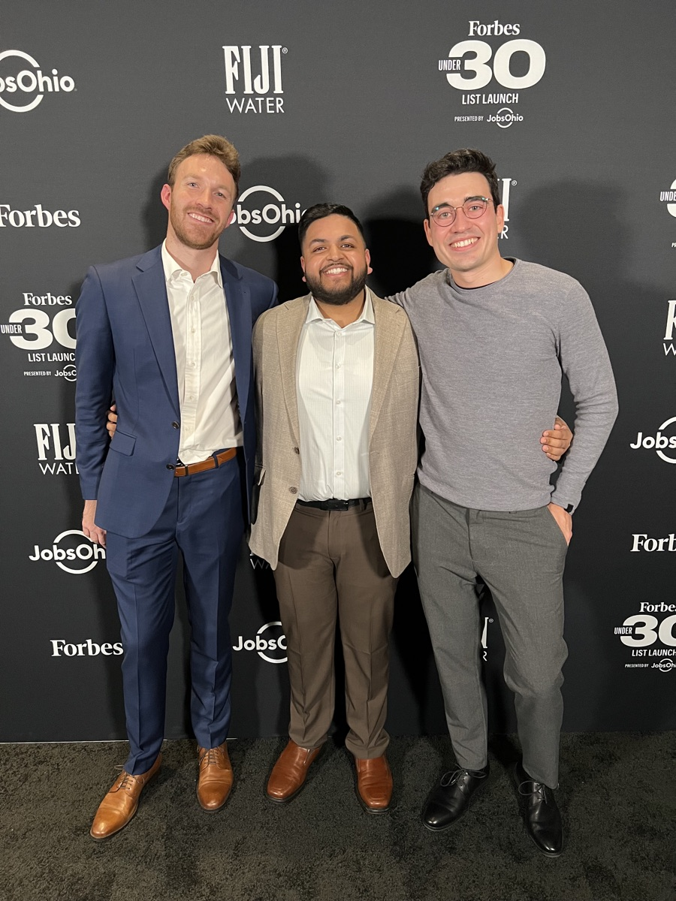
-
2024
Second U.S. patent issued
U.S. Patent No. 12,040,093, a continuation covering our neural model for predicting coronary disease from ECG signals, issued July 31, 2024.
-
2024
AI-derived fractional flow reserve from the ECG
With collaborators at the National Institute of Cardiology in Warsaw, we posted a preprint on using AI analysis of the ECG to estimate fractional flow reserve (FFR), a measure of how much a coronary blockage actually limits blood flow.
-
2023
FDA sign-off on pivotal study protocol
The FDA signed off on our pivotal clinical study protocol with no additional comments in the meeting, clearing the path to the study that supports market authorization.
-
2023
First place and $75,000, Tulane Business Model Competition
Selected from 123 applications, 6 semi-finalists, and 3 finalists. Thank you to Tulane University and the Albert Lepage Center for Entrepreneurship and Innovation at the A. B. Freeman School of Business. New Orleans was an amazing time.
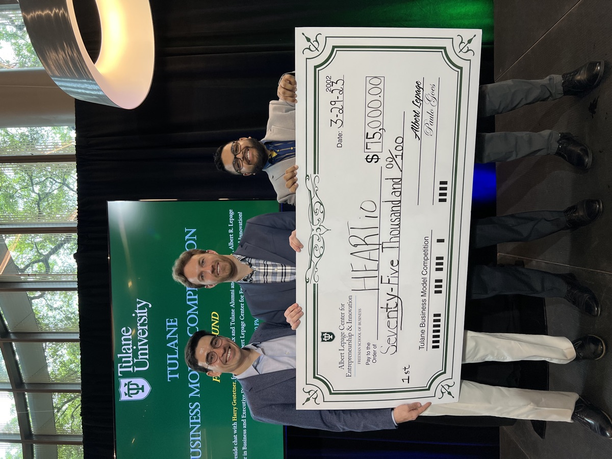
-
2023
Reconstructing a 12-lead ECG from fewer leads
We published "Importance of Electrode Selection and Number in Reconstructing Standard Twelve Lead Electrocardiograms" in Biomedicines, showing how many leads, and which ones, you really need to rebuild a full 12-lead ECG.
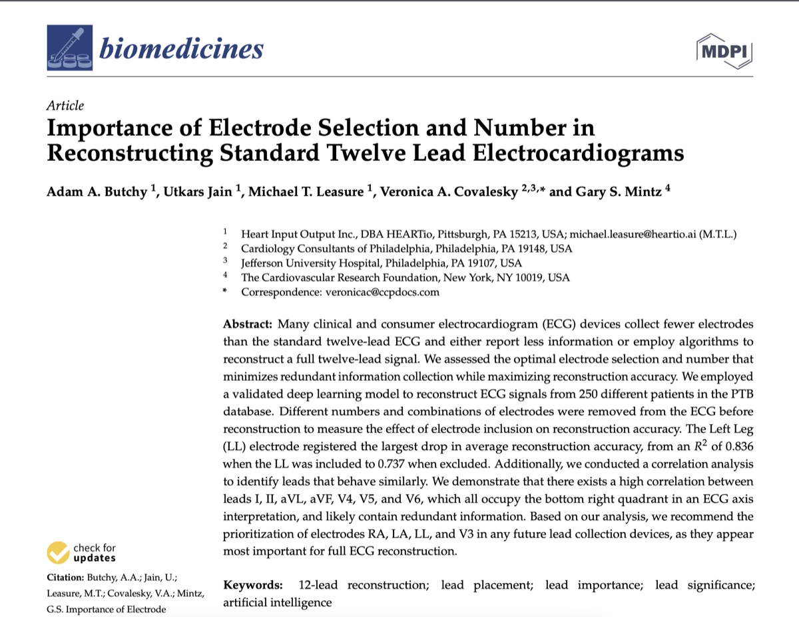
-
2023
First U.S. patent issued
U.S. Patent No. 11,568,991, "Medical diagnostic tool with neural model trained through machine learning for predicting coronary disease from ECG signals," issued January 31, 2023.
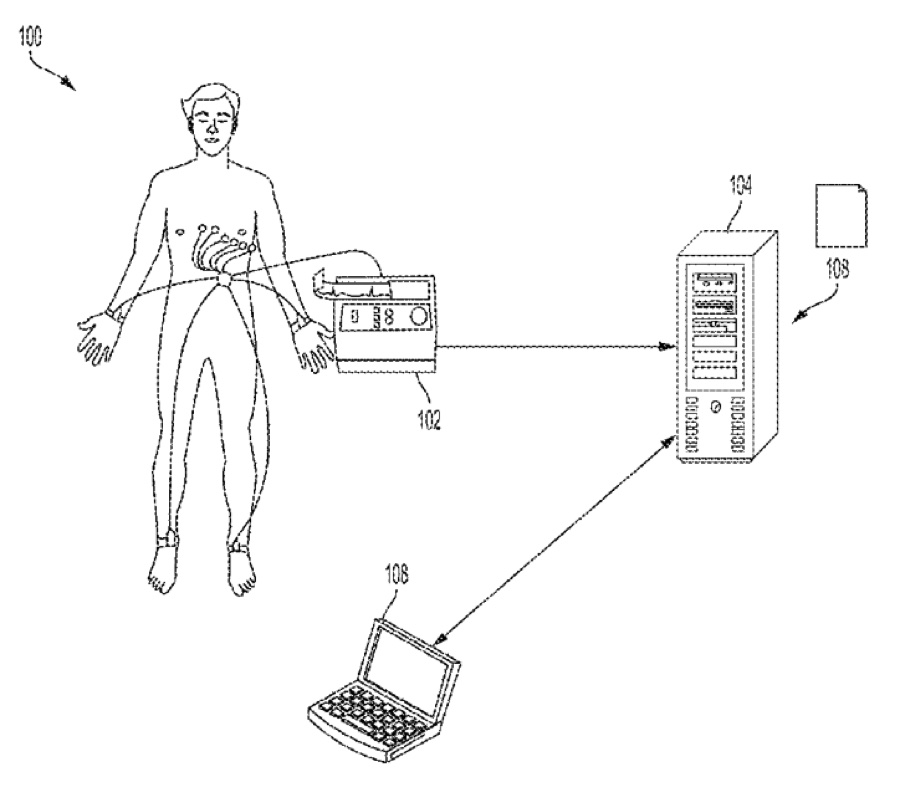
-
2022
Student Innovators of the Year, University of Pittsburgh
The Pitt Office of Innovation and Entrepreneurship recognized the HEARTio founders as Student Innovators of the Year at its 2022 Celebration of Innovation.
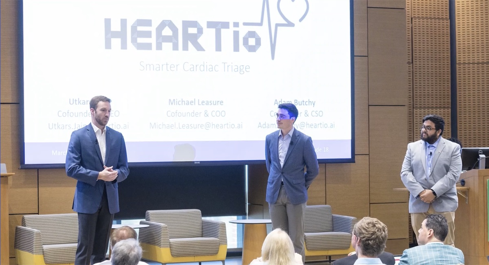
-
2022
First place and $50,000, Baylor New Venture Competition
Chosen from more than 200 applications, 50 semi-finalists, and 10 finalists. Thank you to Baylor University and all of the coaches, mentors, judges, and volunteers who helped us hone our pitch. We hope to be back in Waco soon.
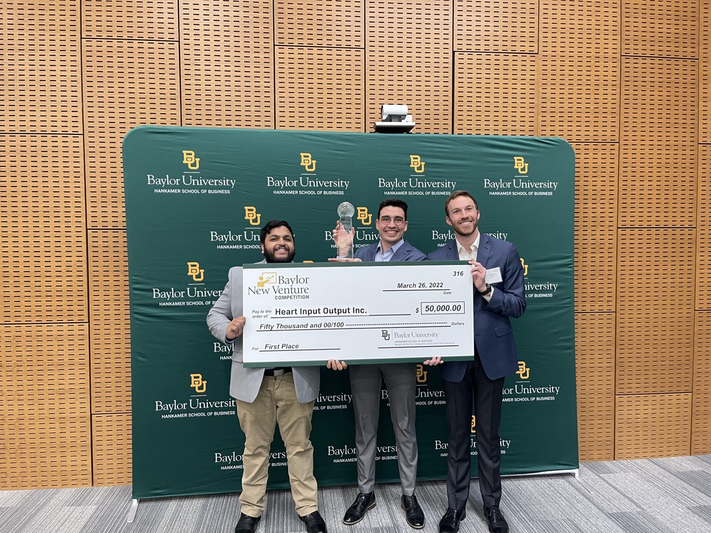
-
2022
Pittsburgh Business Times 30 Under 30
Utkars and I were named to the Pittsburgh Business Times 2022 30 Under 30 class.
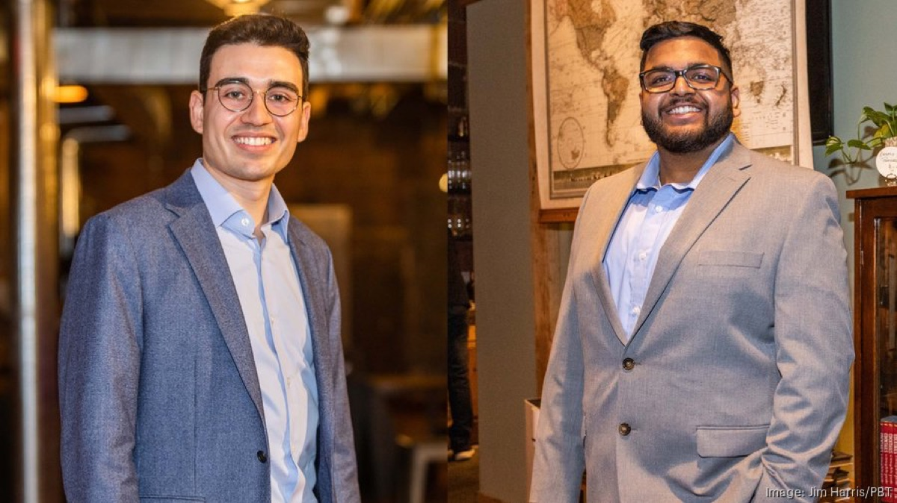
-
2021
Seed round
HEARTio raised $1.5 million in seed financing to fund clinical validation and product development.
-
2021
1,600-patient study published in the Canadian Journal of Cardiology
Our validation study, "Deep Learning Algorithm Predicts Angiographic Coronary Artery Disease in Stable Patients Using Only a Standard 12-Lead Electrocardiogram," compared the algorithm against invasive angiography in stable patients. The same year we presented the results at the European Society of Cardiology Congress, TCT, and the American Heart Association Scientific Sessions.
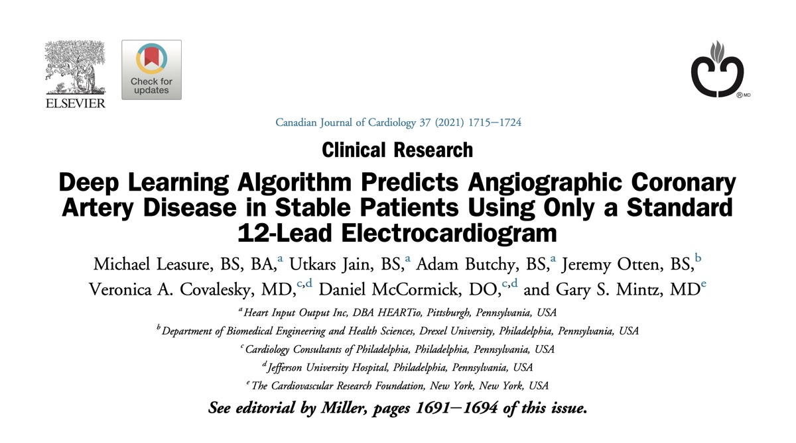
-
2020
First place and $25,000, LiftOff PGH Ideathon
LiftOff PGH held its inaugural, fully virtual health-innovation conference and Ideathon over two weeks. After semi-finals, we live-pitched on December 15 and took the grand prize. Thank you to our mentors Dr. Lynne Porter and Charlie Schaller, and to the Jewish Healthcare Foundation team who ran the competition. Coverage in the Pittsburgh Business Times.
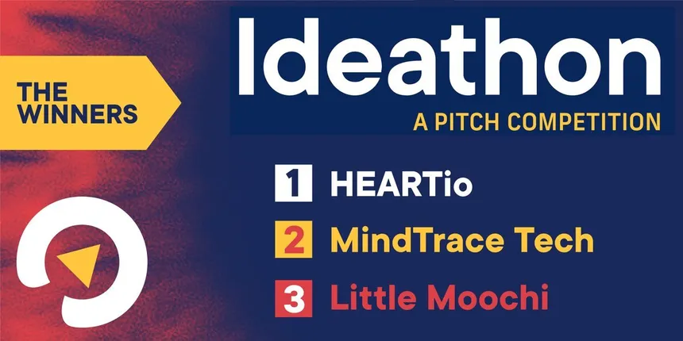
-
2020
FDA Breakthrough Device Designation
The U.S. FDA granted ECGio, HEARTio's AI ECG analysis, Breakthrough Device Designation, a program that expedites development and review of devices that offer more effective diagnosis of life-threatening conditions. Watch the announcement.
-
2020
ISMICS Subramanian Innovation Award
The International Society for Minimally Invasive Cardiothoracic Surgery selected HEARTio's abstract, "Non-invasive Detection of Anatomical Coronary Stenosis via Deep Learning Analysis of Resting EKG Waveforms," as the winner of its annual innovation competition.
-
2019
First place, PDMA Pitch Competition
Best in show among graduate and undergraduate teams from Pitt and CMU at the Product Development and Management Association's 90-second pitch competition.
-
2019
Finalist, Rice Business Plan Competition
HEARTio was one of 42 teams invited to Houston for one of the world's largest and most prestigious student startup competitions, and the lone representative from the University of Pittsburgh.
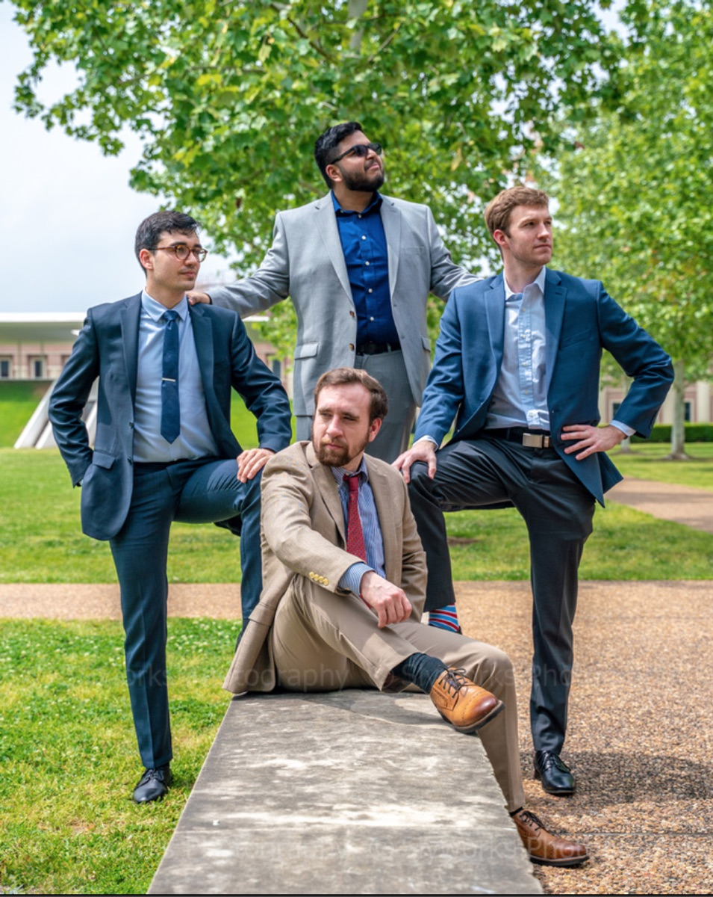
-
2018
Fourth place and $4,000, Randall Family Big Idea Competition
Our first prize money, at the University of Pittsburgh's Randall Family Big Idea Competition. The same spring we were finalists at CMU's McGinnis Venture Competition, joined the NSF I-Corps Site program, and were accepted into NVIDIA's Inception program and the Oracle Scaleup Ecosystem.
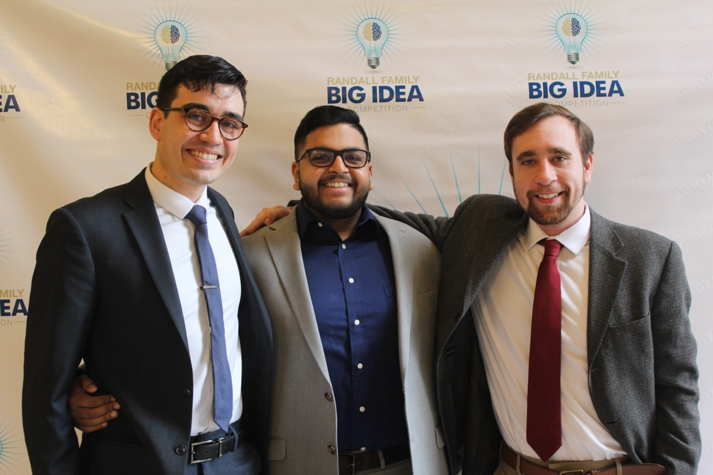
-
2018
HEARTio founded
We incorporated Heart Input Output Inc., began our first clinical study with the Cardiology Consultants of Philadelphia, and were named a finalist in the American Heart Association's Health Tech Competition.
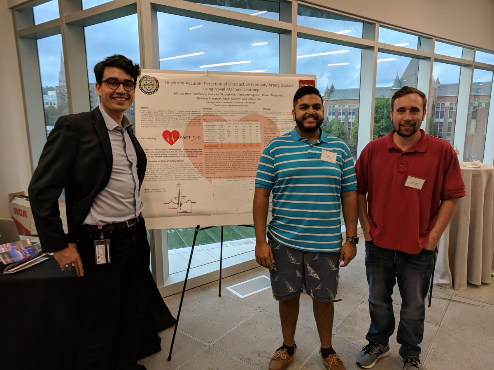
Publications
Selected work from HEARTio. A full list, including my Ph.D. research on computational immunology, is on Google Scholar.
Journal articles
- Artificial Intelligence Analysis of ECG to Determine Fractional Flow Reserve (FFR) medRxiv preprint, 2024.
- Importance of Electrode Selection and Number in Reconstructing Standard Twelve Lead Electrocardiograms Biomedicines 11(6):1526, 2023.
- Deep Learning Algorithm Predicts Angiographic Coronary Artery Disease in Stable Patients Using Only a Standard 12-Lead Electrocardiogram Canadian Journal of Cardiology 37(11):1715–1724, 2021.
Conference proceedings
- Redundancy and Novelty Between ECG Leads Based on Linear Correlation Proceedings of the 16th International Joint Conference on Biomedical Engineering Systems and Technologies (BIOSIGNALS), 2023.
- 12-Lead ECG Reconstruction via Combinatoric Inclusion of Fewer Standard ECG Leads with Implications for Lead Information and Significance Proceedings of the 15th International Joint Conference on Biomedical Engineering Systems and Technologies (BIOSIGNALS), 2022.
Abstracts
- Implications of Noise on Deep Learning Models for 12-Lead ECG Construction Circulation 148(Suppl 1), American Heart Association Scientific Sessions, Philadelphia, 2023.
- Deep Learning Algorithm Predicts Angiographic Diameter Stenosis in Stable Patients Using Only a Standard 12-Lead Electrocardiogram Circulation 144(Suppl 1), American Heart Association Scientific Sessions, 2021.
- TCT-60: Deep-Learning Algorithm Predicts Presence of Angiographic Coronary Artery Disease in Stable Patients Using Only a Standard 12-Lead Electrocardiogram Journal of the American College of Cardiology 78(19 Suppl):B24–B25, TCT 2021.
- Deep learning algorithm predicts angiographic coronary artery disease in stable patients using only a standard 12-lead electrocardiogram European Heart Journal 42(Suppl 1), European Society of Cardiology Congress, 2021.
Patents
- U.S. Patent No. 12,040,093 Medical diagnostic tool with neural model trained through machine learning for predicting coronary disease from ECG signals. Issued July 31, 2024.
- U.S. Patent No. 11,568,991 Medical diagnostic tool with neural model trained through machine learning for predicting coronary disease from ECG signals. Issued January 31, 2023.